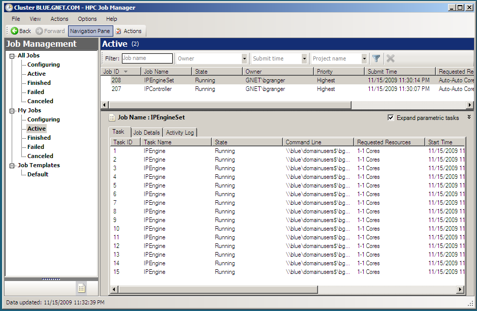

Note
This documentation is for a development version of IPython. There may be significant differences from the latest stable release.
Getting started with Windows HPC Server 2008¶
Introduction¶
The Python programming language is an increasingly popular language for numerical computing. This is due to a unique combination of factors. First, Python is a high-level and interactive language that is well matched to interactive numerical work. Second, it is easy (often times trivial) to integrate legacy C/C++/Fortran code into Python. Third, a large number of high-quality open source projects provide all the needed building blocks for numerical computing: numerical arrays (NumPy), algorithms (SciPy), 2D/3D Visualization (matplotlib, Mayavi, Chaco), Symbolic Mathematics (Sage, Sympy) and others.
The IPython project is a core part of this open-source toolchain and is focused on creating a comprehensive environment for interactive and exploratory computing in the Python programming language. It enables all of the above tools to be used interactively and consists of two main components:
- An enhanced interactive Python shell with support for interactive plotting and visualization.
- An architecture for interactive parallel computing.
With these components, it is possible to perform all aspects of a parallel computation interactively. This type of workflow is particularly relevant in scientific and numerical computing where algorithms, code and data are continually evolving as the user/developer explores a problem. The broad threads in computing (commodity clusters, multicore, cloud computing, etc.) make these capabilities of IPython particularly relevant.
While IPython is a cross platform tool, it has particularly strong support for Windows based compute clusters running Windows HPC Server 2008. This document describes how to get started with IPython on Windows HPC Server 2008. The content and emphasis here is practical: installing IPython, configuring IPython to use the Windows job scheduler and running example parallel programs interactively. A more complete description of IPython’s parallel computing capabilities can be found in IPython’s online documentation (http://ipython.org/documentation.html).
Setting up your Windows cluster¶
This document assumes that you already have a cluster running Windows HPC Server 2008. Here is a broad overview of what is involved with setting up such a cluster:
- Install Windows Server 2008 on the head and compute nodes in the cluster.
- Setup the network configuration on each host. Each host should have a static IP address.
- On the head node, activate the “Active Directory Domain Services” role and make the head node the domain controller.
- Join the compute nodes to the newly created Active Directory (AD) domain.
- Setup user accounts in the domain with shared home directories.
- Install the HPC Pack 2008 on the head node to create a cluster.
- Install the HPC Pack 2008 on the compute nodes.
More details about installing and configuring Windows HPC Server 2008 can be found on the Windows HPC Home Page (http://www.microsoft.com/hpc). Regardless of what steps you follow to set up your cluster, the remainder of this document will assume that:
- There are domain users that can log on to the AD domain and submit jobs to the cluster scheduler.
- These domain users have shared home directories. While shared home directories are not required to use IPython, they make it much easier to use IPython.
Installation of IPython and its dependencies¶
IPython and all of its dependencies are freely available and open source. These packages provide a powerful and cost-effective approach to numerical and scientific computing on Windows. The following dependencies are needed to run IPython on Windows:
- Python 2.6 or 2.7 (http://www.python.org)
- pywin32 (http://sourceforge.net/projects/pywin32/)
- PyReadline (https://launchpad.net/pyreadline)
- pyzmq (http://github.com/zeromq/pyzmq/downloads)
- IPython (http://ipython.org)
In addition, the following dependencies are needed to run the demos described in this document.
- NumPy and SciPy (http://www.scipy.org)
- matplotlib (http://matplotlib.org)
The easiest way of obtaining these dependencies is through the Enthought Python Distribution (EPD) (http://www.enthought.com/products/epd.php). EPD is produced by Enthought, Inc. and contains all of these packages and others in a single installer and is available free for academic users. While it is also possible to download and install each package individually, this is a tedious process. Thus, we highly recommend using EPD to install these packages on Windows.
Regardless of how you install the dependencies, here are the steps you will need to follow:
- Install all of the packages listed above, either individually or using EPD on the head node, compute nodes and user workstations.
- Make sure that C:\Python27 and C:\Python27\Scripts are in the system %PATH% variable on each node.
- Install the latest development version of IPython. This can be done by downloading the the development version from the IPython website (http://ipython.org) and following the installation instructions.
Further details about installing IPython or its dependencies can be found in the online IPython documentation (http://ipython.org/documentation.html) Once you are finished with the installation, you can try IPython out by opening a Windows Command Prompt and typing ipython. This will start IPython’s interactive shell and you should see something like the following:
Microsoft Windows [Version 6.0.6001]
Copyright (c) 2006 Microsoft Corporation. All rights reserved.
Z:\>ipython
Python 2.7.2 (default, Jun 12 2011, 15:08:59) [MSC v.1500 32 bit (Intel)]
Type "copyright", "credits" or "license" for more information.
IPython 0.12.dev -- An enhanced Interactive Python.
? -> Introduction and overview of IPython's features.
%quickref -> Quick reference.
help -> Python's own help system.
object? -> Details about 'object', use 'object??' for extra details.
In [1]:
Starting an IPython cluster¶
To use IPython’s parallel computing capabilities, you will need to start an IPython cluster. An IPython cluster consists of one controller and multiple engines:
- IPython controller
- The IPython controller manages the engines and acts as a gateway between the engines and the client, which runs in the user’s interactive IPython session. The controller is started using the ipcontroller command.
- IPython engine
- IPython engines run a user’s Python code in parallel on the compute nodes. Engines are starting using the ipengine command.
Once these processes are started, a user can run Python code interactively and in parallel on the engines from within the IPython shell using an appropriate client. This includes the ability to interact with, plot and visualize data from the engines.
IPython has a command line program called ipcluster that automates all aspects of starting the controller and engines on the compute nodes. ipcluster has full support for the Windows HPC job scheduler, meaning that ipcluster can use this job scheduler to start the controller and engines. In our experience, the Windows HPC job scheduler is particularly well suited for interactive applications, such as IPython. Once ipcluster is configured properly, a user can start an IPython cluster from their local workstation almost instantly, without having to log on to the head node (as is typically required by Unix based job schedulers). This enables a user to move seamlessly between serial and parallel computations.
In this section we show how to use ipcluster to start an IPython cluster using the Windows HPC Server 2008 job scheduler. To make sure that ipcluster is installed and working properly, you should first try to start an IPython cluster on your local host. To do this, open a Windows Command Prompt and type the following command:
ipcluster start -n 2
You should see a number of messages printed to the screen. The result should look something like this:
Microsoft Windows [Version 6.1.7600]
Copyright (c) 2009 Microsoft Corporation. All rights reserved.
Z:\>ipcluster start --profile=mycluster
[IPClusterStart] Using existing profile dir: u'\\\\blue\\domainusers$\\bgranger\\.ipython\\profile_mycluster'
[IPClusterStart] Starting ipcluster with [daemon=False]
[IPClusterStart] Creating pid file: \\blue\domainusers$\bgranger\.ipython\profile_mycluster\pid\ipcluster.pid
[IPClusterStart] Writing job description file: \\blue\domainusers$\bgranger\.ipython\profile_mycluster\ipcontroller_job.xml
[IPClusterStart] Starting Win HPC Job: job submit /jobfile:\\blue\domainusers$\bgranger\.ipython\profile_mycluster\ipcontroller_job.xml /scheduler:HEADNODE
[IPClusterStart] Starting 15 engines
[IPClusterStart] Writing job description file: \\blue\domainusers$\bgranger\.ipython\profile_mycluster\ipcontroller_job.xml
[IPClusterStart] Starting Win HPC Job: job submit /jobfile:\\blue\domainusers$\bgranger\.ipython\profile_mycluster\ipengineset_job.xml /scheduler:HEADNODE
At this point, the controller and two engines are running on your local host. This configuration is useful for testing and for situations where you want to take advantage of multiple cores on your local computer.
Now that we have confirmed that ipcluster is working properly, we describe how to configure and run an IPython cluster on an actual compute cluster running Windows HPC Server 2008. Here is an outline of the needed steps:
- Create a cluster profile using: ipython profile create mycluster --parallel
- Edit configuration files in the directory .ipython\cluster_mycluster
- Start the cluster using: ipcluster start --profile=mycluster -n 32
Creating a cluster profile¶
In most cases, you will have to create a cluster profile to use IPython on a cluster. A cluster profile is a name (like “mycluster”) that is associated with a particular cluster configuration. The profile name is used by ipcluster when working with the cluster.
Associated with each cluster profile is a cluster directory. This cluster directory is a specially named directory (typically located in the .ipython subdirectory of your home directory) that contains the configuration files for a particular cluster profile, as well as log files and security keys. The naming convention for cluster directories is: profile_<profile name>. Thus, the cluster directory for a profile named “foo” would be .ipython\cluster_foo.
To create a new cluster profile (named “mycluster”) and the associated cluster directory, type the following command at the Windows Command Prompt:
ipython profile create --parallel --profile=mycluster
The output of this command is shown in the screenshot below. Notice how ipcluster prints out the location of the newly created profile directory:
Z:\>ipython profile create mycluster --parallel
[ProfileCreate] Generating default config file: u'\\\\blue\\domainusers$\\bgranger\\.ipython\\profile_mycluster\\ipython_config.py'
[ProfileCreate] Generating default config file: u'\\\\blue\\domainusers$\\bgranger\\.ipython\\profile_mycluster\\ipcontroller_config.py'
[ProfileCreate] Generating default config file: u'\\\\blue\\domainusers$\\bgranger\\.ipython\\profile_mycluster\\ipengine_config.py'
[ProfileCreate] Generating default config file: u'\\\\blue\\domainusers$\\bgranger\\.ipython\\profile_mycluster\\ipcluster_config.py'
[ProfileCreate] Generating default config file: u'\\\\blue\\domainusers$\\bgranger\\.ipython\\profile_mycluster\\iplogger_config.py'
Z:\>
Configuring a cluster profile¶
Next, you will need to configure the newly created cluster profile by editing the following configuration files in the cluster directory:
- ipcluster_config.py
- ipcontroller_config.py
- ipengine_config.py
When ipcluster is run, these configuration files are used to determine how the engines and controller will be started. In most cases, you will only have to set a few of the attributes in these files.
To configure ipcluster to use the Windows HPC job scheduler, you will need to edit the following attributes in the file ipcluster_config.py:
# Set these at the top of the file to tell ipcluster to use the
# Windows HPC job scheduler.
c.IPClusterStart.controller_launcher_class = 'WindowsHPCControllerLauncher'
c.IPClusterEngines.engine_launcher_class = 'WindowsHPCEngineSetLauncher'
# Set these to the host name of the scheduler (head node) of your cluster.
c.WindowsHPCControllerLauncher.scheduler = 'HEADNODE'
c.WindowsHPCEngineSetLauncher.scheduler = 'HEADNODE'
There are a number of other configuration attributes that can be set, but in most cases these will be sufficient to get you started.
Warning
If any of your configuration attributes involve specifying the location of shared directories or files, you must make sure that you use UNC paths like \\host\share. It is helpful to specify these paths using raw Python strings: r'\\host\share' to make sure that the backslashes are properly escaped.
Starting the cluster profile¶
Once a cluster profile has been configured, starting an IPython cluster using the profile is simple:
ipcluster start --profile=mycluster -n 32
The -n option tells ipcluster how many engines to start (in this case 32). Stopping the cluster is as simple as typing Control-C.
Using the HPC Job Manager¶
føø When ipcluster start is run the first time, ipcluster creates two XML job description files in the cluster directory:
- ipcontroller_job.xml
- ipengineset_job.xml
Once these files have been created, they can be imported into the HPC Job Manager application. Then, the controller and engines for that profile can be started using the HPC Job Manager directly, without using ipcluster. However, anytime the cluster profile is re-configured, ipcluster start must be run again to regenerate the XML job description files. The following screenshot shows what the HPC Job Manager interface looks like with a running IPython cluster.
Performing a simple interactive parallel computation¶
Once you have started your IPython cluster, you can start to use it. To do this, open up a new Windows Command Prompt and start up IPython’s interactive shell by typing:
ipython
Then you can create a DirectView instance for your profile and use the resulting instance to do a simple interactive parallel computation. In the code and screenshot that follows, we take a simple Python function and apply it to each element of an array of integers in parallel using the DirectView.map() method:
In [1]: from IPython.parallel import *
In [2]: c = Client(profile='mycluster')
In [3]: view = c[:]
In [4]: c.ids
Out[4]: [0, 1, 2, 3, 4, 5, 6, 7, 8, 9, 10, 11, 12, 13, 14]
In [5]: def f(x):
...: return x**10
In [6]: view.map(f, range(15)) # f is applied in parallel
Out[6]:
[0,
1,
1024,
59049,
1048576,
9765625,
60466176,
282475249,
1073741824,
3486784401L,
10000000000L,
25937424601L,
61917364224L,
137858491849L,
289254654976L]
The map() method has the same signature as Python’s builtin map() function, but runs the calculation in parallel. More involved examples of using DirectView are provided in the examples that follow.